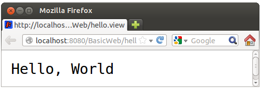
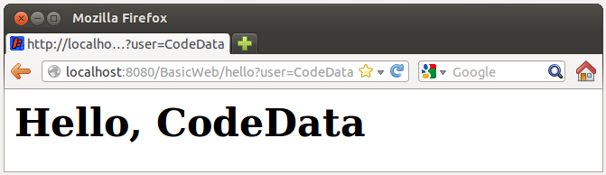

在 Java 中開發 Web 應用程式會基於 Servlet、JSP 等標準，Servlet、JSP 必須運行於 Web 容器（Container），Web 容器簡單來說，就是個用 Java 寫的應用程式，從 Servlet、JSP 的角度來看，就是它們唯一認得的 Web 平台，也就是說，只要你能提供 Web 容器作為 Servlet、JSP 運行的平台，你的 Web 應用程式理想上就不用理會底層實際的 HTTP 伺服器為何。
基於 Servlet、JSP 標準來開放 Web 應用程式，你必須遵守一些實體資源架構，像是編譯出來的 .class 檔案，必須放置在 Web 應用程式目錄中的 /WEB-INF/classes/ 目錄，JAR 檔案必須放置在 /WEB-INF/lib/ 目錄，可直接被 HTTP 客戶端請求的資源（像是 HTML、JavaScript、JSP等原始碼），則可放置在 /WEB-INF/ 以外的其他目錄。
Web 應用程式必須包裝為 WAR（Web Archive），實際上是 zip 壓縮格式、副檔名為 .war 的檔案，這個 WAR 檔案必須依 Web 容器實作廠商之規定部署（Deploy）至伺服器上。Web 容器如何實作有標準規範，Java 領域最常聽到的實作之一是 Apache Tomcat，也就是本課程要使用的實作。
在這邊並不打算大費周章地直接下載 Tomcat、寫個 Servlet、建立 WAR 檔、進行部署等，而是使用 Gradle，搭配 gradle-tomcat-plugin 來進行示範。例如在一個 BasicWeb 目錄中如下編輯 build.gradle：
apply plugin: 'tomcat'
buildscript {
repositories {
jcenter()
}
dependencies {
classpath 'org.gradle.api.plugins:gradle-tomcat-plugin:1.0'
}
}
repositories {
mavenCentral()
}
dependencies {
providedCompile 'javax.servlet:javax.servlet-api:3.1.0'
def tomcatVersion = '7.0.11'
tomcat "org.apache.tomcat.embed:tomcat-embed-core:${tomcatVersion}",
"org.apache.tomcat.embed:tomcat-embed-logging-juli:${tomcatVersion}"
tomcat("org.apache.tomcat.embed:tomcat-embed-jasper:${tomcatVersion}") {
exclude group: 'org.eclipse.jdt.core.compiler', module: 'ecj'
}
}這邊的設定，部份來自 gradle-tomcat-plugin 中的說明，現階段你不用太細究它們，只要知道這可以用 Gradle 啟動一個內嵌的 Tomcat 容器就可以了。在
providedCompile 可以看到，這邊使用 Servlet 3.x，可使用標註（Annotation）來設定 URL 模式（Pattern）等資訊，如果是先前的 Servlet 規範，你會需要 /WEB-INF/web.xml 來進行對應的資訊設定。
因為使用 Servlet 3.x，你只要在 src/main/java 中 tw/codedata 套件目錄下，撰寫一個 Servlet 原始碼就可以了：
package tw.codedata;
import java.io.*;
import javax.servlet.ServletException;
import javax.servlet.annotation.WebServlet;
import javax.servlet.http.*;
@WebServlet(urlPatterns={"/hello.view"})
public class HelloWorld extends HttpServlet {
@Override
protected void doGet(HttpServletRequest req, HttpServletResponse resp)
throws ServletException, IOException {
resp.getWriter().println("Hello, World");
}
}Servlet 繼承自
javax.servlet.http.HttpServlet，如果你要處理 GET 請求，就重新定義 doGet 方法，javax.servlet.http.HttpServletRequest 與 javax.servlet.http.HttpServletRequest 分別代表請求與回應物件，呼叫 HttpServletRequest 的 getWriter 取得輸出資料用的物件後，呼叫 println 方法就可輸出字串回應。
注意
urlPatterns 設定為 "/hello.view"，這表示資源的 URL 是 /hello.view，因此接下來，你只要執行 gradle tomcatRunWar，開啟瀏覽器請求 http://localhost:8080/BasicWeb/hello.view，就可以看到以下畫面：{kind=link}

練習 10：使用 Servlet、JSP
雖然 Servlet 可以直接輸出呈現內容，不過設計上，Servlet 最好只接受、驗證與轉發請求，不要涉及呈現內容，如果要呈現內容可使用 JSP 技術，要結合 Gradle 與 gradle-tomcat-plugin 的話，JSP 檔案可以放在 src/main/web-app 下（如果你需要 WEB-INF 目錄，也是建在這個目錄下）。
在 Lab 檔案的 exercises/exercise10 中有個 BasicWeb 專案，它是以上示範的成果，請修改一下第一個 Servlet 如下：
package tw.codedata;
import java.io.*;
import javax.servlet.ServletException;
import javax.servlet.annotation.WebServlet;
import javax.servlet.http.*;
@WebServlet(urlPatterns={"/hello"})
public class HelloWorld extends HttpServlet {
@Override
protected void doGet(HttpServletRequest req, HttpServletResponse resp)
throws ServletException, IOException {
String user = req.getParameter("user"); // 取得請求參數
req.setAttribute("user", user); // 設定請求屬性
req.getRequestDispatcher("hello.jsp").forward(req, resp); // 轉發至 JSP
}
}注意現在的
urlPatterns 設定為 "/hello" 了，設定請求屬性 "user" 為取得的請求參數之後，就可以在 JSP 中使用 ${user} 來取得並顯示，例如可在 src/main/webapp 目錄中寫個 hello.jsp 如下：
<html>
<body>
<h1>Hello, ${user}</h1>
</body>
</html>在執行
gradle tomcatRunWar 後，請求 http://localhost:8080/BasicWeb/hello?user=CodeData，就可以看到以下畫面：
{kind=link}
